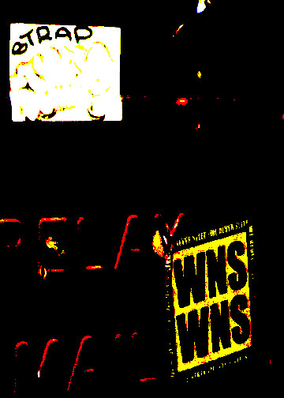

I chose this image because of the different designs on it. It made it seem like a nice photo to change its original features. I decided to go with a dark but light color feel. Thus way the colors pop without seeing whats behind it. The color change and the brightness being lowered allowed for a more artistic feel. Since the original color is dark green making feel brighter but keeping the same dark felt right.
 Go to first image Go to homepage